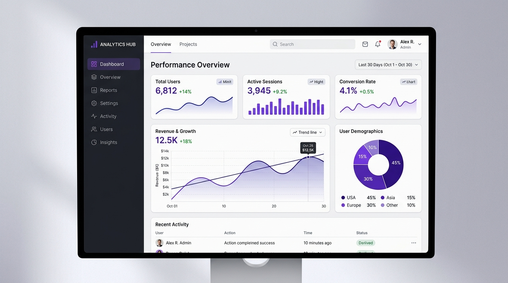
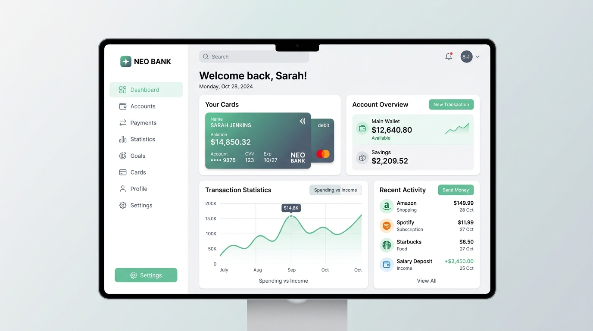
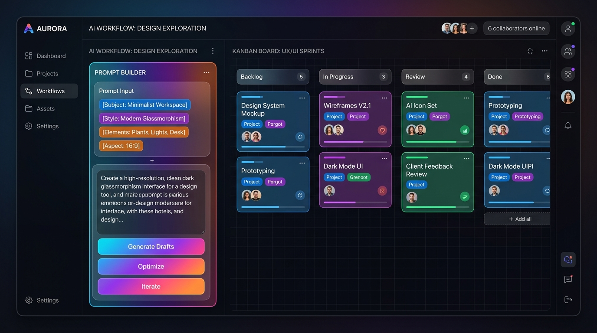

Analytics Hub — Real-time Metric Platform
Dashboard visualisasi data interaktif untuk memonitor metrik konversi, tren pendapatan harian, dan demografi pengguna secara waktu-nyata.
Halo! Saya Hardilal Danuarta, seorang Full-Stack & Frontend Developer yang berfokus menciptakan produk web modern dengan estetika minimalis, performa optimal, dan arsitektur kode yang terstruktur.
Membantu startup dan bisnis mewujudkan antarmuka digital yang tidak hanya memukau dipandang, namun juga tangguh, aman, dan mudah diskalakan.
Menulis kode terstruktur, modular, dan mematuhi best practices (DRY, SOLID, semantic HTML) sehingga mudah dirawat dan dikembangkan oleh tim engineer.
Optimasi performa halaman, efisiensi bundle, caching pintar, dan Core Web Vitals untuk memastikan kecepatan loading instan di jaringan mana pun.
Memastikan setiap alur interaksi intuitif, ramah aksesibilitas (a11y), responsif di layar ponsel hingga monitor 4K, serta micro-interactions yang mulus.
Perangkat dan teknologi modern yang saya gunakan sehari-hari untuk menghidupkan ide menjadi produk digital nyata.
Kumpulan proyek unggulan yang memecahkan masalah nyata, mulai dari aplikasi manajemen data hingga sistem finansial terpadu.

Dashboard visualisasi data interaktif untuk memonitor metrik konversi, tren pendapatan harian, dan demografi pengguna secara waktu-nyata.

Platform pengelolaan kartu debit virtual, pelacakan riwayat transaksi otomatis, dan analisis arus kas belanja vs pendapatan bulanan.

Ruang kerja kolaboratif desainer & engineer berbasis AI prompt generator yang terhubung langsung dengan Kanban board task management.
Pengalaman profesional dalam berkontribusi membangun produk digital bersama tim lintas disiplin.
Kerja sama nyata yang menghasilkan solusi berdampak positif.
"Hardilal memiliki kombinasi langka antara selera desain yang sangat teliti dan pemahaman teknis arsitektur web yang solid. Proyek dashboard kami selesai lebih cepat dari jadwal!"
"Kualitas kode sangat rapi dan dokumentasinya lengkap. Menyerahkan tugas development frontend ke Hardilal selalu memberikan rasa tenang karena hasilnya selalu melampaui ekspektasi."
Punya ide proyek, tawaran kolaborasi, atau sekadar ingin menyapa? Kirimkan pesan melalui formulir di bawah ini.